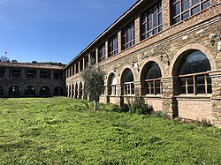
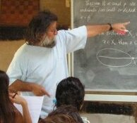

Welcome to the Mathematical World!
Mathematical Village!
It is natural to become highly astonished, because no one ever has let most of the readers to know that
such
a
mathematical village exists in this world. Please do not worry, as there are already two such
mathematical
villages
in the world. Both of them are situated in Turkey. These two villages are
Nesin Mathematical Village, and Cakilarasi Mathematical Village.
- Nesin Mathematical Village
-
Nesin Mathematical Village is the most important of the mathematical villages in Turkey. It is a educational and research centre devoted for
mathematics, situated 800 m from Sirince village in Selcuk District of Izmir Province in Western Turkey.It was launched in 2007 by Ali Nesin, a veteran mathematics professor, who heads up education non-profit Nesin Foundation established by his father, humorist writer Aziz Nesin (1915–1995). The Nesin Mathematics Village hosts numerous mathematical activities, mostly taken in summer. Courses range from high-school to graduate university courses, where courses are delivered mainly in Turkish, and may be in English for undergraduate or postgraduate courses.

Ali Nesin's mathematical research area is "Groups of finite Morley rank". He is also the responsible editor of the journal named Matematik Dünyası, which has been published quarterly since 2003 and owned by the Turkish Mathematical Society. In addition, he has lecture notes on set theory and analysis accepted by the Turkish Academy of Sciences.
As like other mathematical incidents, Nesin Mathematical Village was not spare of struggle. In July 2007, Tekin Karadağ, the president of the Şirince Environment and Nature Association, slated this village to be demolished because of it being "an illegal construction", with objectives of being a rump foundation in a remote forest in the midst of remoteness in nature. Fortunately, Allah Ta'ala saved this mathematical village. Harun Abuş, Director of Development and City Planning of Selçuk Municipality, declared that at this moment Nesin Mathematics Village is "not on the demolition calendar".
- Cakilarasi Mathematical Village
-
The Çakılarası Mathematics Village is the second educational and research institute devoted to mathematics in Turkey. This village is located in Sarıcakaya, Eskişehir.

As like Nesin Mathematical Village, Çakılarası Mathematical Village is also situated in a remote area, offering courses only to graduate students. They have a scheduled time of just 20 hours in total every week. The students must bring their own bed sheets for sleep. They have their breakfast and lunch as watermelon-cheese-bread. They learn mathematics within nature as well.

All rights reserved by the Mathematical Unity
Contact: +8801400044645
Email: mathematicalhorse1453@gmail.com
Our Discord Server: Mathematical Unity [Ulus Riyadiyat]